Pilonidal Disease
INTRO
'Pilonidal' = 'hair nest'.
I E A B M
I M
EPIDEMIOLOGY
Males 4:1.
Age
15-24, decreases after 25, rare after 45.
~3yrs earlier in F.
Risk Factors
Past episodes.
Often hairy individuals (but rarely blondes with their finer hair -
dark
hair is stiffer)
Often obese.
Barbers get it between their fingers.
- as do wool handlers, milkers, dog groomers and a man who worked in
the slaughterhouse.
Rare in East (?ablution post-defecation - i.e. possibly toilet
paper-related).
Also common in those regularly sitting on hard vibrating seats
- e.g.
WW2
"jeep riders bottom" when 78,924 young people treated for it in Army
Hospitals.
I E A B M I M
AETIOLOGY
'Once thought congenital; now = not
Trauma / mechanical
Penetration of stiff hairs into subcut tissues of natal celft.
1. The invader
Broken off hairs collect at natal cleft / post anal dimple as they
fall
from neck, back and buttocks.
2. The force
Because buttocks take weight and are exposed to shearing forces and
vibrations,
as well as the action of toilet paper, hair may penetrate a
sudoriferous
gland.
- these glands are most active in early adulthood, so more open.
3. Vulnerability of natal cleft skin
A sinus forms, and negative pressure / sinus size increases further,
sucking more
free hairs
inwards (root-ends first).
A cavity of hairs results.
Also rarely occur in axilla and umbilicus.
I E A B M I M
BIOLOGICAL BEHAVIOUR
Pathophysiology
The body reacts to the hair like a foreign body.
- chronic inflammation.
Also often become secondarily infected.
--> may form an acute abscess.
Often recur (same or different sites) in susceptible patients.
Pathology
The sinus extends upwards and forwards towards sacrum.
- it does not reach the bone
- up to six openings may be present, all strictly in the midline.
The sinus may extend into the subcutaneous planes as an infected
track.
- branching side chains not infrequent.
- it may discharge through a primary sinus.
- more commonly they point and burst.
A stratified squamous epithelium may surround them.
The hairs either lie in the sinus or are embedded in granulation
tissue
around
them, or most often, imbedded in deep mature scar tissue.
Foreign body giant cells are common.
Complex disease
Given 'class III-IV' in some classifications
Basically when extends beyond natal cleft or is recurrent
Recurrence
Three possible causes for this disappointment:
i) a sinus tract was overlooked.
ii) new hairs have entered skin (new site).
iii) when the natal fold is deformed by scar, the least trauma can
tear
the
scar, leaving it open to contamination.
MANIFESTATIONS
Symptoms
Local
Pilonidal abscess
Pain, swelling or discharge at the bottom of the spine.
- often of short duration, with swelling.
Presence of pit
- may be asymptomatic or minimal symptoms forever.
Systemic
Even at height of attack, constitutional symptoms are slight.
Signs
Observe
Often a chronic or recurring sinus visible at level of 1st portion
of
coccyx.
- may be mistaken for an anal fistula
May become acutely painful / swollen with discharge and hair tuft.
- the discharge is often bloodstained, containing foul sebum /
hairs.
- varies from a little serous material to a sudden gush of pus.
- surrounding induration.
Primary sinus openings are always in the midline, often over the
lowest
part of sacrum / coccyx.
- one or many; often obscured in acute abscesses.
- some with smooth epithelialised edges, others with pucker /
scarring,
some with pouting granulation tissue.
Possible secondary openings on buttocks / perineum if complex
disease.
Palpate
A tender swelling, +/- fluctuance.
Inguinal lymph nodes usually normal; mild and chronic infection
usual.
I E A B M I M
INVESTIGATIONS
Clinical condition.
I E A B M I M
MANAGEMENT
Acute management
Most agree that adequate drainage key in acute presentation.
Open abscess via small incision, and drain.
Remove all hairs and granulation tissue from the abscess cavity.
Eliptical incision just off the midline for
best drainage and fastest healing.
No need to pack
This is definitive in ~60%, with no further treatment needed,
especially in those >30yrs.
Consider further surgery if sinus persists at six months.
Crucial not to perform an excision
of the pits when there is acute infection
- only leads to worse
disease and more major procedures later.
ABs?
Treat accompanying cellulitis as necessary.
Otherwise only if immunocompromised or diabetic.
Post op care
Avoid sitting on wound for a day or two.
Daily baths
The scar must be protected from further incursions of hair by
shaving.
Most will not require further treatment.
Some will fail to
settle...
Pilonidal Sinuses
There are many approaches and none are perfect.
Less invasive measures becoming more preferred.
- continued courses of antibiotics and see if will settle.
- wise specialist may only operate in 1:5 or less referrals
Warn patients that they will have a cosmetic change to their
backside
Further Management of
Chronic
Disease
Numerous procedures are described and practiced.
Ideal is simple, short inpatient stay, low recurrence, minimal
pain, rapid return to activity, and cost-effective.
Indications for
Surgery
1. Chronic pain
2. Recurrent abscesses
3. Chronic drainage
Nonsurgical approach
Asymptomatic or mildly symptomatic = be conservative
Resolution of small sinuses by:
- repeat shavings; 5cm around area; laser hair removal also very
good
- antibiotics
Phenol injection described
- painful, not commonly done
Role of peri-op antibiotics
Usual peri-op dose only
Post-op courses do not alter healing or outcome
Only considered if major flap and drains left in place.
Position
Prone with
buttocks taped apart.
1. Fistulotomy and curettage
Unroof all sinus tracts
- converting to open wound to heal by secondary intention.
- Prone-jack-knife or left lateral.
- Wide shaving pre op.
- Place a probe in each sinus and incise over the probe
- Follow by curetting and cautery to the tract granulation tissue.
- Get all of them; leave none else there will be recurrence.
- marsupialization.
- haemostasis, haemostatic packing.
Discharge same day.
Daily care with showers / dressing changes
Keep area shaved 5cm from surrounding edges (very important).
This is the easiest treatment.
- but prolonged wound care needed
Success rates ~90% with good technique and hair removal.
Advantage of this approach is faster healing time; smaller wound.
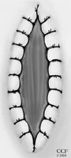
2. Sinus excision
- tracts identified; probed to define extent.
- excised with a margin of a few mm of normal skin; no need to go
down to presacral fascia.
- wound edges then approximated to fibrous base of presacral fascial
- then marsupialized
- if sutures pull out, wound returns to original size.
- same post-op care as above.
- additional care may be dividing premature skin bridges, curetting
excess granulation tissue.
Wound care
Has a long time for healing
- reucrrence only slightly better, perhaps 5-10% rate
Vac large defects.
3. Bascom technique
Off-midline approaches
Incise lateral to midline.
- approach cavity and curretage to free of hair and granulation
tissue with
gauze.
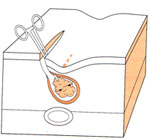
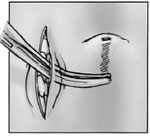
Remove the midline pits by small incisions 2-4mm.
- remove minimal healthy tissue
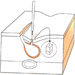
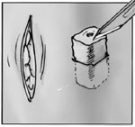
- close small midline incisions
- leave the lateral incision open.
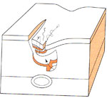
Similar outcomes to midline approaches above.
Some surgeons close the lateral defect
Advantage is that it is relatively simple and heals in 3 weeks.
Cleft Bascom
With a flap. Complicated.
4. Karydakis technique
Karydakis attempted to improve on primary immediate closure by
closing
off the midline.
Useful for recurrent midline pilonidal disease
Principles
Lateralization of the midline cleft, bringing the wound away from
the midline.
1. Excise the midline sinus elliptically.
2. Assymetric excision of midline until sacral fascia reached.
- once excised:
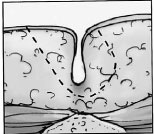
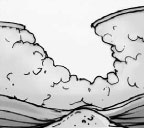
3. Lateral advancement flap with subcutaneous tissue, bringing
defect away from the natal cleft.
- natal cleft flattened, entire suture-line now lateral.
Close off the midline.
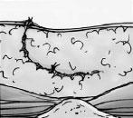
Recurrence rate <5%, and much lower in the right hands.
- probably because
midline now less vulnerable to hair penetration.
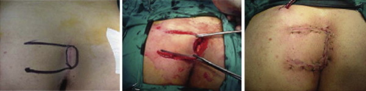
5. Wide total excision and Skin
grafting
Reasonable & effective with low recurrence, but
long hospital stay of 10d means less ideal.
6. More complex flap procedures
Move to flaps if recurrent disease or extensive disease outside of
natal cleft.
Total removal, tension-free repair so theoretically strong.
Many are described, most are standard types of flaps.
Beside z-plasty, v-y advancement flaps, rhomboid flaps, and glut max
musculocutaenous flaps have been employed.
Require hospital stays >5d with bed rest.
Flatten natal cleft and change orientation of midline fold.
Similar recurrence rates but done in complex cases.
Z-plasty
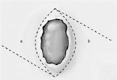
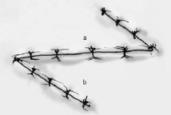
Flaps are raised down beneath subcut tissue to level of fascia.
Series of 120 pts showed recurrence of 1.6% at long-term follow-up,
some abscess complications
- discharged at d1, return to work ~d14.
Rhomboid
A nice flap; perhaps flap of choice
Rhomboid-shape flap mobilised tull thickness down to glut fascia.
Has best results vs other flaps; lower complications etc.
(But choice of flap ultimately based on type of defect.)
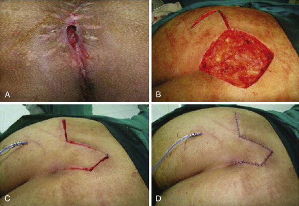
Should I use a drain?
Probably decrease incidence of collections under the flaps.
Overall benefit unclear from literature.
Use if big flap. Antibiotics. Closed system.
What about methylene blue?
Traditionally used.
Stains a lot of healthy tissue leading to unnecessary resection.
Don't use
How important is ongoing shaving?
Shaving to 5cm is a must and often overlooked..
Controversial as to how long, but if hair gets in there, it will not
heal.
What if there is re-recurrence?
Try another procedure or expert referral.
Ensure religious wound care and regular shaving.
Choice of Technique
Simple --> unroof and marsupialize
Bad midline disease --> Karydakis
Recurrent or extensive --> Rhomboid Flap; refer to somebody high
volume.
I E A B M I M
References
Hull TL et al. Surg Clin N AM 82 (2002) 1169-85.
B&L 24th
Sabistons 17th